NiFi运行在主机操作系统的Java虚拟机。Java虚拟机中的NiFi主要组件包括：
Nifi用于构建系统间自动化的数据流。由于有些系统用于生产数据，有些系统用于消费数。为解决数据生产与消费问题，产生很多解决模式，其中最广泛和最简易的消费模式为企业集成模式（EIP Enterprise Integration Pattern）。
数据流所面临的高级挑战：
多年以来，数据流(dataflow)已经成为架构中必备的罪恶组件。尽管目前通过一系列进化，使数据流获得了一定关注，并帮助一些企业取得了重要的成功。这些技术包括：SOA（Service Oriented Architecture）、API的崛起、物联网（IoT Internet of Things）、大数据技术。对于服务对隐私以及安全有着苛刻的要求。在这些新概念与需要的背景下，数据流的需求同样大幅度的提高。数据流的使用场景发生一定的变化，复杂的范围、适应变化的速度、规模以及边缘的变化变得非常普遍。NiFi的建立是为了帮助解决这些现代的数据流挑战。
Nifi的核心理念是基于流程的编程（FBP Flow Based Programming）。以下是Nifi的概念，帮助理解FBP：
| Nifi术语 | FBP术语 | 描述 |
|---|---|---|
| 流程文件（FlowFile） | 信息包（Information Packet） | 流程文件代表每个系统间运动的对象，Nifi跟踪一个Key/Value的字符串键值对的map |
| 流程文件处理器（FlowFile Processor） | 黑盒（Black Box） | 处理器实际工作的单元。EIP中，处理器进行系统间的数据路由、转换、调解。处理器访问特定FlowFile中的属性以及上下文流。在特定的工作单元，处理器可以操作多个FlowFile，执行commit或rollback操作 |
| 连接（Connection） | 有界缓冲区（Bounded Buffer） | 连接为两个处理器提供连接。像一个队列一样，协调多个不同速率的处理之间的互动。这些队列可以动态地优先级排序，并且在压力调节时可以在负载上有上界 |
| 流程控制器（Flow Controller） | 调度器 | 流程控制器管理流程连接、处理器的线程数等。流程控制器充当FlowFile与处理器之间的代理，促进两者之间信息交换 |
| 处理组（Process Group） | 子网（subnet） | 处理组是一系列特定的处理以及连接，通过输入端口接收数据通过输出数据发送数据。处理组允许创建新组件简化其他组件的组成 |
这种设计模型与SEDA类似，使Nifi具有很多优势，成为一个高效、有力的、可扩展的数据流构建平台。优势包括：
NiFi运行在主机操作系统的Java虚拟机。Java虚拟机中的NiFi主要组件包括：

自NiFi 1.0版，NiFi集群就采用无Master并行集群。每个NiFi节点执行相同的数据加工任务，但是每个节点上处理不同的数据集。Apache ZooKeeper选举一个集群协调区（Cluster Coordinator），如果出现故障ZooKeeper自动进行处理。所有集群节点向集群协调器报告心跳及状态。集群协调器负责切断或连接节点。并且，每个集群有唯一的主节点，该节点也由ZooKeeper选举而来。统一通过节点中任意一台机器的UI界面访问NiFi集群，对数据加工流程进行管理。任何操作都将被复制分发到集群中的任意节点，集群运行多个入口点
NiFi在设计上充分利用宿主机的性能，充分利用CPU以及磁盘的性能。在后续的管理手册中有相关的最佳实践与配置
以上宏观的对NiFi基础原理进行了描述，形成了NiFi的鸟瞰视图，介绍了NiFi的特性。NiFi的关键特性分为如下几类：流程管理、易用性、安全性、可扩展性架构、灵活扩展模型。
在软件设计中，扇入和扇出的概念是指应用程序模块之间的层次调用情况。
按照结构化设计方法，一个应用程序是由多个功能相对独立的模块所组成。
扇入：是指直接调用该模块的上级模块的个数。扇入大表示模块的复用程序高。
扇出：是指该模块直接调用的下级模块的个数。扇出大表示模块的复杂度高，需要控制和协调过多的下级模块；但扇出过小（例如总是1）也不好。扇出过大一般是因为缺乏中间层次，应该适当增加中间层次的模块。扇出太小时可以把下级模块进一步分解成若干个子功能模块，或者合并到它的上级模块中去。
设计良好的软件结构，通常顶层扇出比较大，中间扇出小，底层模块则有大扇入
更加恰当的说法是：描述负载状况的一种描述方式
在如下路径下载NiFi对应版本：
http://nifi.apache.org/download.html
Windows用户，在bin目录下，以管理员身份运行run-nifi.bat即可启动NiFi
出现如下窗口，说明应用已启动
Linux用户将需要运行bin/nifi.sh
若需要后台运行则需要执行：bin/nifi.sh start
查看NiFi运行专科需要执行：bin/nifi.sh status
停止NiFi服务需要执行：bin/nifi.sh stop
Linux用户可以将NiFi安装成服务。在安装目录中执行如下命令，将服务安装成默认名称nifi：
bin/nifi.sh install
如果需要指定安装的服务名需要在命令后增加一个服务名（serviceName是服务名称）：
bin/nifi.sh install [serviceName]
eg. bin/nifi.sh install dataflow
服务安装完成后可以通过以下命令启停查看状态：
sudo service nifi start
sudo service nifi stop
sudo service nifi status
当NiFi服务启动后，通过访问如下路径可以访问控制台：
htttp://localhost:8080/nifi/
如果NiFi正常启动，将出现如下窗口：
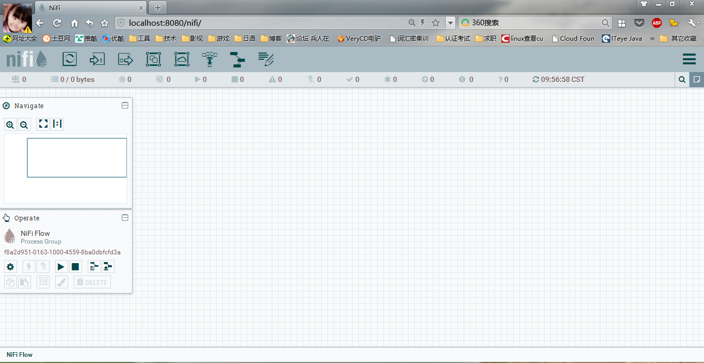
NiFi的控制面板的布局如下：
点击页面右上角的菜单按钮【】
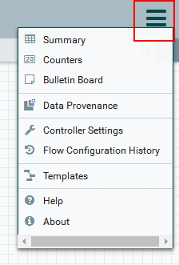
可以拖拽【】将处理器放到画布上，创建数据加工流程
将处理器拖到画布上之后，会出现对话框，选择处理器种类
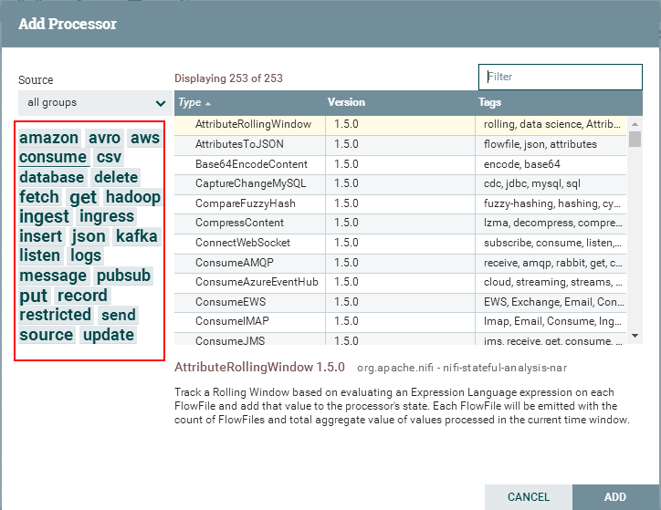
对话框左边是一些tags，是开发人员为处理器定义的一些标签，可以理解为关键字。可以帮助开发人员通过标签迅速过滤处理器类型。通过对话框右上角的Filter也可以通过输入关键字对处理器进行过滤
例如：我们需要将本地文件传到NiFi，我们可以通过file关键字进行过滤，当然通过local关键字过滤效果更好。
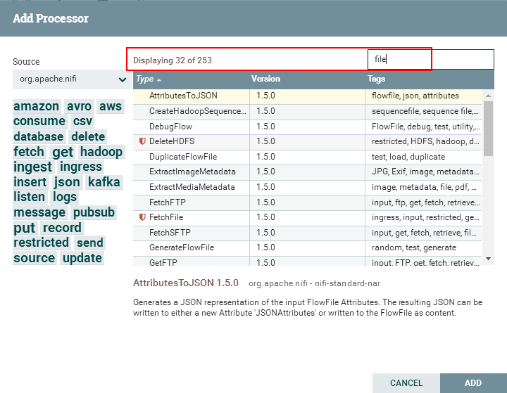
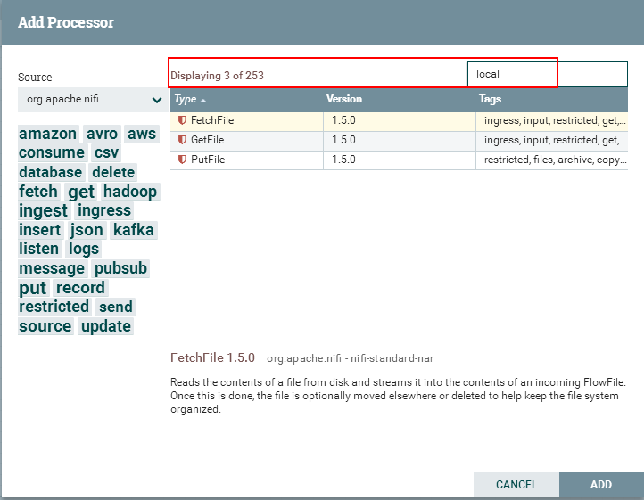
在对话框下有一个关于处理器的简短介绍
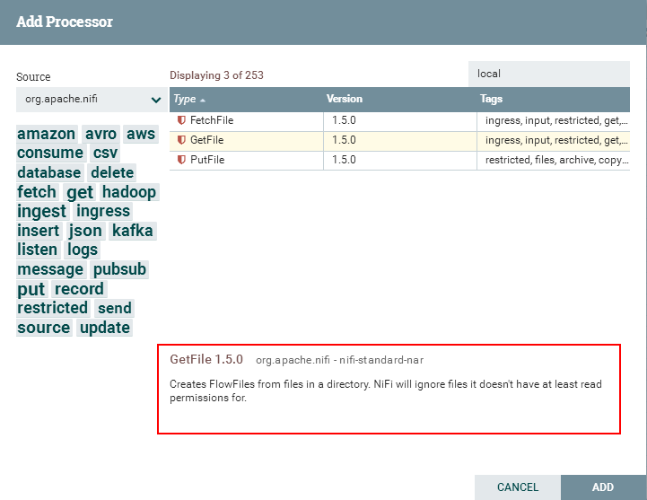
按描述，GetFile处理器从本地磁盘拉数据到NiFi，然后将本地文件删除。
点击【Add】按钮或者双击处理器，将处理器添加到画布上
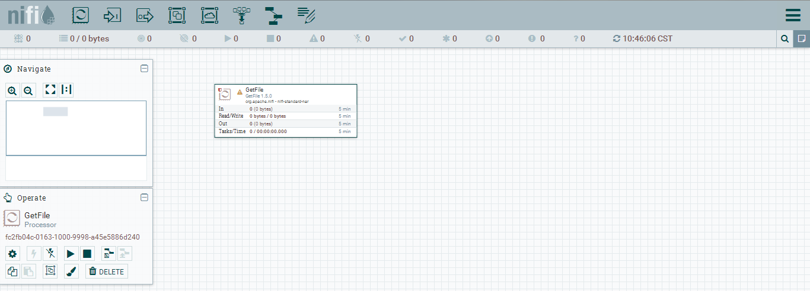
右键点击处理器选择【Configure】配置处理器。
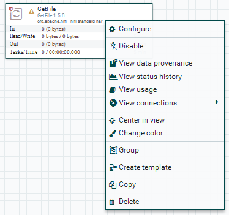
处理器的配置页面时多页签页面
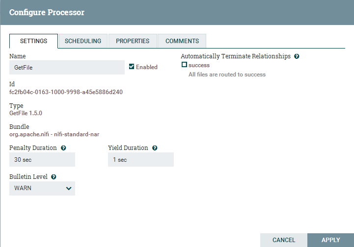
对于处理器的配置重点关注【Properties】页签。在Properties页签内，是一个属性列表。每个处理器的属性列表都不相同。必填字段为粗体字，在必填属性未被设置的情况下，处理器无法运行
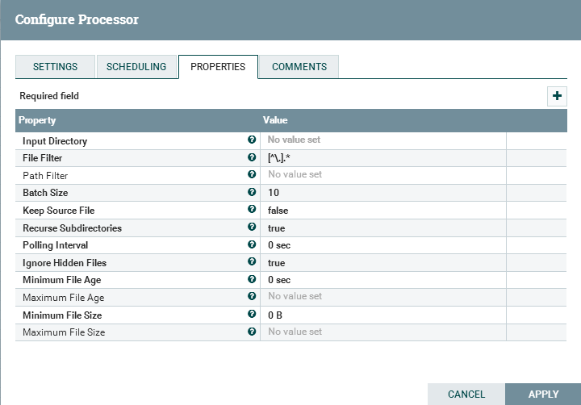
在GetFile处理器最关键的属性就是获取文件的本地目录。设置【Input Directory】属性。如果设置该路径，
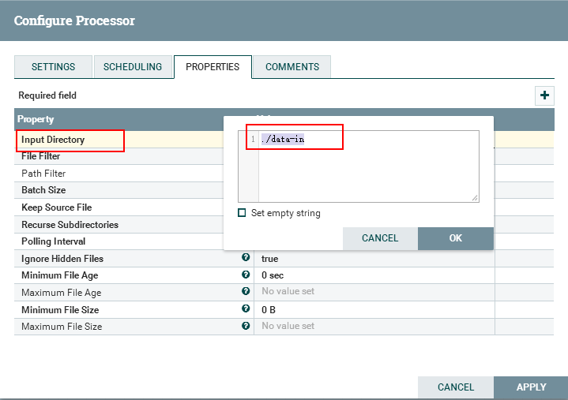
当不知道该属性的用途时，可以将鼠标滑至【 】图标，显示该属性的提示信息。提示信息中还包括默认值。有些属性支持表达式语言（Expression Language可以参考如下链接）在提示信息中显示。
】图标，显示该属性的提示信息。提示信息中还包括默认值。有些属性支持表达式语言（Expression Language可以参考如下链接）在提示信息中显示。
【Expression Language / Using Attributes in Property Values 】
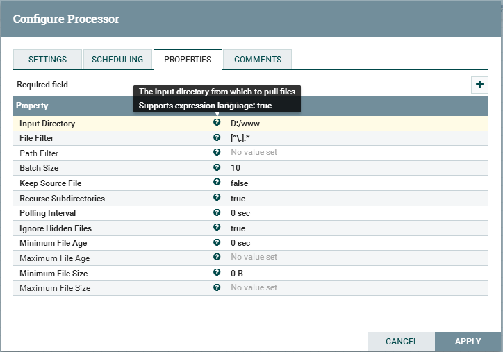
点击【Apply】按钮提交，并关闭对话框
每个处理器都有一系列被定义为【关系（Relationship）】的对象，这些对象用于发送数据。当一个处理器完成了自己流程文件（FlowFile）的加工后，它将结果传给其中的一个关系。关系使用户可以配置灵活处置处理后的结果。如，许多处理器定义了两个关系：成功/失败。用户就可以定义条正常路径处理正常处理后的结果以及一条异常处理由于某些原因不能处理的数据。或者，根据用例，可以将两个关系路由到相同的处理流程的路径上。
在完成GetFile处理器配置后，在处理器左上角有一个【 】图标，表示该处理器仍然不可用。通过这个图标可以看到成功的关系并没定义，鼠标移动到【】图标可以看到提示信息。提示该警告信息意味着NiFi并不知道在处理器成功传输数据后应该相关的关系后续应该有哪些操作
】图标，表示该处理器仍然不可用。通过这个图标可以看到成功的关系并没定义，鼠标移动到【】图标可以看到提示信息。提示该警告信息意味着NiFi并不知道在处理器成功传输数据后应该相关的关系后续应该有哪些操作
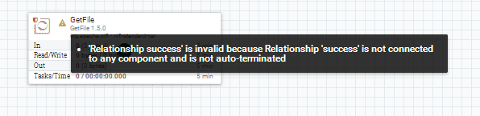
为将流程完整化，需要再追加一个处理器与GetFile处理器连接。与上面的步骤一样，只不过我们追加一个日志在已有的FlowFile上，所以追加一个LogAttributes处理器
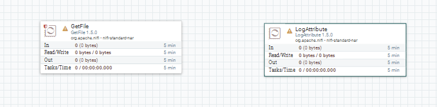
为连接GetFile与LogAttribute处理器，鼠标移动到GetFile处理器上时会出现一个【 】图标，拉一条线从GetFile到LogAttribute将会弹出一个连接两个处理器的关系配置页面。NiFi自带的校验功能可以将不合理的线条拖拽控制住，比如从LogAttribute拉线到GetFile就不能成功
】图标，拉一条线从GetFile到LogAttribute将会弹出一个连接两个处理器的关系配置页面。NiFi自带的校验功能可以将不合理的线条拖拽控制住，比如从LogAttribute拉线到GetFile就不能成功
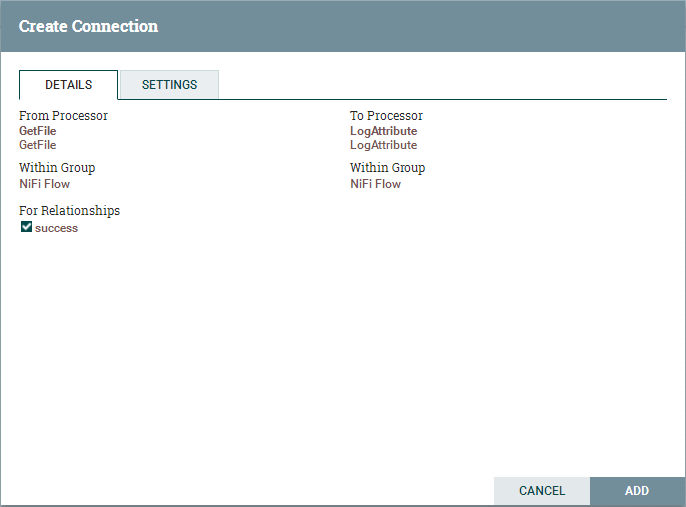
打开【Setting】选项卡来配置连接的行为
可以为连接指定名称，如果不指定名称，连接名将会按照关系命名。还可以为数据指定时限，默认情况下是“0秒”，意味着数据将永不过期，但可以修改改属性值，当连接达到移动时间，NiFi将自动删除过期的文件
背压阀（backpressure threshold）在队列达到一定深度时，源处理器将不再运行。这种机制运行管理员处理一个处理器产生数据能力高于另一个处理器的消费数据能力的业务场景。引入了反压力配置，在导入数据的处理遇到反压机制时，将会停止导入新数据，在系统恢复消费能力时又可以重新开始导入数据
在对话框的右侧是排序器（Prioritizer），允许管理员指定数据在队列中的顺序。可以将【可用排序器】列表中的排序器拖拽到【已选择排序器】内按顺序激活排序器。如果在指定的排序器内指定多个排序器，第一个排序器先生效，按照第一个排序器判断两个FlowFile都满足，再按照第二个计算
完成关系设定后，点击【Add】完成关系设置
在完成关系的设置后，处理器就不是感叹号而变成【】
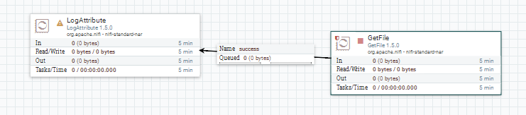
此时LogAttribute处理器由于没有指定成功后的关系而变成不可用。此时需要声明当LogAttribute执行成功后，将自动终止，这样流程文件在处理结束后数据将丢弃。设置方法：在LogAttribute处理器的【设置】页签中，将Automatically Terminate Relationships下的success勾选框选中，则两个处理器都不再报警告了
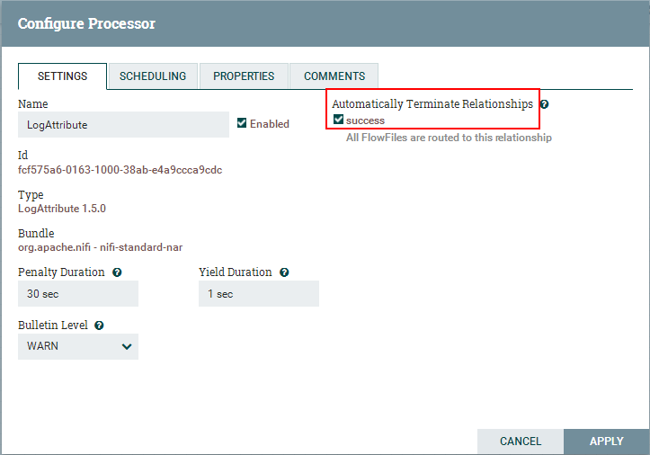
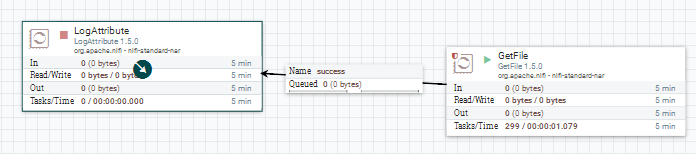
右键点击流程上的每个处理器，点击【Start】菜单项。也可以用shift+鼠标左键选中每个处理器，然后再右键点击【Start】同时启动每个处理器
同样可以使用Operate面板上的启动停止按钮将处理器组内的处理器全部启动或停止
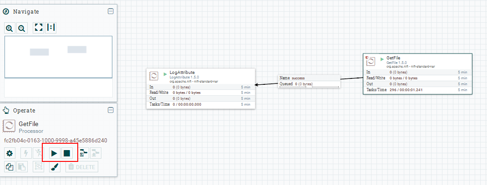
一旦处理器开始运行，状态图标就由停止变成运行状态。点击上下文菜单（右键点击处理器调出的菜单）【Stop】可以停止处理器
一旦处理器运行起来，就不能再配置处理器。右键点击正在运行的处理器只能查看正在运行的处理器的配置情况。如果想要修改处理器，需要停止处理并等待正在执行的流程执行完毕。处理器正在处理的任务应该会在右上角的In属性显示
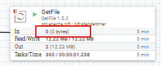
右键点击处理器，在上下文菜单中点击【View Usage】查看NiFi的处理器文档查看处理器的用途、关系属性以及与其他处理器的差别
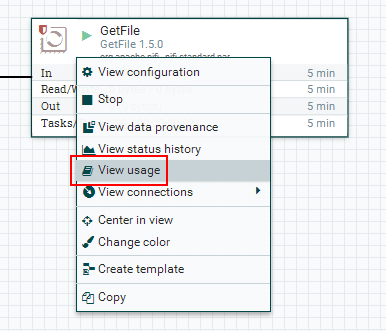
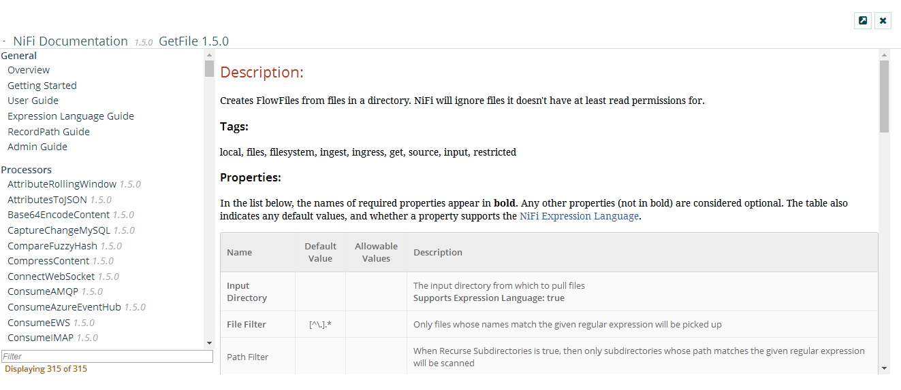
NiFi有大量数据处理组件，利用这些组件可以构建数据加工流程。这些组件包括输入输出端口、漏斗、处理组、远程处理组。这些组件的详细介绍在后续详细的手册中介绍
为了创建有效的数据流，用户需要理解可用处理器的类型。Nifi包含众多开箱即用的处理器。这些处理器使不同系统间吸收数据、数据路由、数据转换、数据处理、数据切分、数据聚集、数据分发的能力。
NiFi每个版本发布时，都会有更多的处理器投入使用。因此，这里不介绍所有可用的处理器，只重点介绍最常用的处理器，并且根据他们的功能进行分类